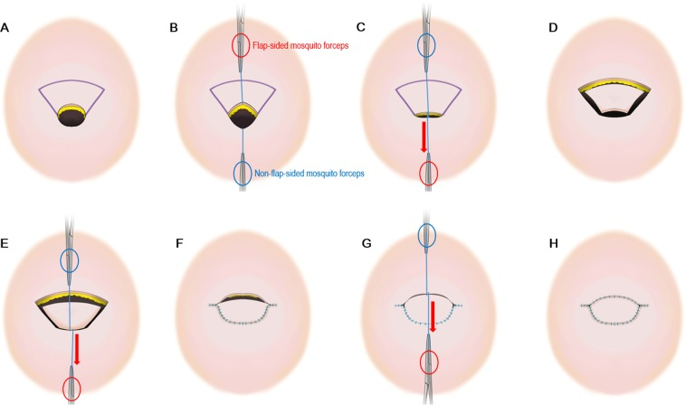
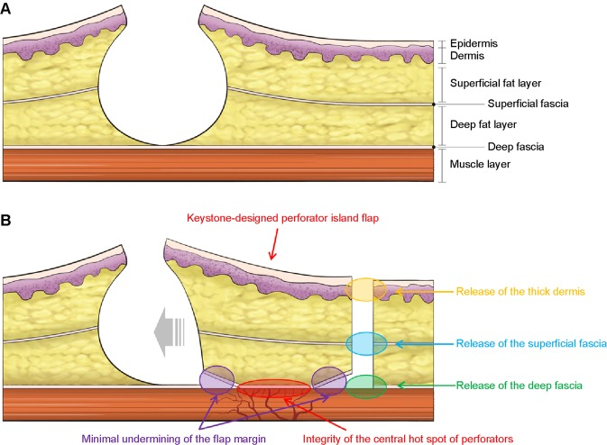

皮膚がん（とくにメラノーマ＝悪性黒色腫）を切除したあとに残る皮膚の欠損（穴）を、植皮（皮膚だけを移植する方法）や複雑な皮弁に頼らず、すぐわきの皮膚だけで一期的に（1回で）閉じる方法を報告した論文です。著者ベハン（Behan）は、この皮弁をキーストーン穿通枝島状皮弁（KDPIF＝Keystone Design Perforator Island Flap）と名づけました。「キーストーン（要石）」とはアーチの頂点にある楔（くさび）形の石のことで、2つのV-Y前進皮弁を弧状に組み合わせた皮弁の形がこれにそっくりなことが名前の由来とされます。皮弁の下に偶然存在する局所の穿通枝（せんつうし＝皮膚へ立ち上がる細い血管）を温存したまま欠損へ滑り込ませるのが特徴で、現在では皮膚科領域や体幹・四肢の再建で広く使われています。
背景 ― 「植皮か、複雑な皮弁か」しかなかった時代
皮膚がん（とくにメラノーマ＝悪性黒色腫）を取り除くと、そのあとには皮膚の欠損（穴）が残ります。これを閉じる方法として長く使われてきたのが、分層植皮（ぶんそうしょくひ＝皮膚の表層だけを薄く採って貼る方法）や、離れた場所の皮膚を血管ごと運んでくる複雑な皮弁（ひべん＝血流を持った皮膚の塊）でした。しかし植皮は色や質感が合いにくく、採皮部にも別の傷が残ります。複雑な皮弁は技術的に難しく、体への負担も大きいとされます。
とくに体幹や四肢では、欠損のすぐ近くの皮膚を使ってその場で閉じられれば理想的です。しかし単純に両側から引き寄せるだけでは張力が強すぎて閉じられないことが多く、かといって大きく皮膚を剥がすと、皮膚を養う血管（穿通枝）まで切ってしまい、皮弁が壊死（えし＝血流不足で組織が死ぬこと）する危険があります。
そこで求められたのが、「局所の皮膚だけで」「血流を保ったまま」「植皮を使わず一期的に（1回で）」欠損を閉じられる、シンプルで再現性の高い方法でした。この論文の著者ベハン（Behan）は、皮膚がん切除後の閉創という日常的な問題に対する答えとして、キーストーン皮弁を提示したとされます。
この論文がしたこと
著者は、皮膚がん（とくにメラノーマ）切除後の皮膚欠損を閉じる術式として、キーストーン穿通枝島状皮弁（KDPIF）を報告しました。抄録によれば、この皮弁は弧を描く台形（curvilinear trapezoidal＝カーブした台形）で、全体としては楕円形に近く、その長軸を欠損の長軸に沿わせて、欠損のすぐわきにデザインします。
血流源は、あらかじめ場所を特定した1本の血管ではなく、皮弁の下に偶然存在する穿通枝（randomly located vascular perforators＝ランダムな位置の穿通枝）だとされます。V-Y前進（V字に切って、Y字に縫い閉じる動かし方）と、血管を傷つけない鈍的剥離（どんてきはくり＝押し広げるように組織を分ける操作）によって、皮弁を島状にして欠損へ滑り込ませ、同時にできた二次的な欠損（ドナー側）も閉じられる、と説明されています。閉創の仕方によって4つの型（type I〜IV）に分けられるとされます。
抄録では、この方法が頭皮から足まで全身のあらゆる部位に使え、7年間で300例に用いられたと述べられています。植皮の必要を最小限にでき、見た目の仕上がりも良好で、術後の痛みが少なく早期離床（早く動き出すこと）が可能、とも記されています。（以下で触れる症例数・成績は、いずれも原著の抄録に記載された数値です。）
「要石」の形と、手技の要点
「キーストーン（要石）」とは、アーチや石造りの天井の頂点に置かれる楔（くさび）形の石のことです。両側の石を締め結んで構造全体を安定させる石で、皮弁の形がこれにそっくりなことが名前の由来とされます。構造としては、2つの対向するV-Y前進皮弁を弧状につないだ形になっている、と後年の総説では整理されています。
手技の要点は、皮弁の血流を守ることにあります。欠損のわきにデザインした皮弁の外周を切り開いて「島」にしますが、このとき皮弁の真下にある穿通枝の集まり（central hot spot of perforators＝血流の要）は温存します。だからメスで鋭く切らず、鈍的剥離で血管を残しながら持ち上げ、皮弁のふちも最小限しか剥がしません。
動かし方は、皮弁の両端をV字からY字に閉じることで生まれる「ゆとり（laxity）」を使います。このゆとりのぶんだけ皮弁が欠損側へ横に前進し、欠損を覆います。皮弁の幅は、閉じたい楕円形の欠損とおおむね1対1が目安とされます。特定の穿通枝を探し当てる必要がない点が、名前のよく似た前外側大腿皮弁（ALT皮弁）などとの大きな違いといえます。


結果
原著の抄録には、300例という具体的な症例数と成績が記されています。それによれば、300例のうち99.6%が一次治癒（いっきちゆ＝縫い閉じた創がそのままきれいに治ること）に至り、皮弁の部分壊死（血流不足で一部が死ぬこと）はわずか1例のみだったとされます。
また、術後の痛みが少なく、早期の離床（りしょう＝早く動き出すこと）が可能だったと述べられています。植皮を使う必要を最小限にでき、整容的（せいようてき＝見た目）にも良好な結果が得られた、と記されています。
これらの数値は、いずれも著者自身による約7年間の報告に基づくものです。抄録より詳しい内訳（部位別の成績や合併症の細かな内容など）は本文に譲られており、本ページでは抄録に明記された数値のみを記しました。
意義 ― なぜ世界中で使われるようになったのか
キーストーン皮弁は、その後の再建外科で急速に広まりました。理由は、抄録が挙げた長所とよく対応しています。デザインが単純で覚えやすく、特定の穿通枝を探さなくてよいため再現性が高い。植皮を避けて一期的に閉じられ、局所の皮膚を使うので色や質感が自然に仕上がる、という点です。
とくに皮膚科領域や、体幹・四肢の欠損で人気が高いとされます。もともとメラノーマ切除後の閉創のために考案された経緯もあり、皮膚がん手術との相性がよいためです。その後は関節周囲や顔面など難しい部位への応用や、型（type）の追加・「modified keystone（改良キーストーン）」といった改良が数多く報告されています。
名前に「穿通枝（perforator）」を含みますが、この皮弁の本当の特徴は、むしろ「特定の穿通枝を同定しなくてよい」点にあります。穿通枝皮弁が精緻な血管の見きわめへと向かった時代に、あえて局所のありふれた血流を信じてシンプルに閉じる ― その割り切りの良さが、キーストーン皮弁が長く使われ続ける理由だといえます。
この論文の要点
- 植皮や複雑な皮弁に頼らず、局所の皮膚だけで皮膚欠損を一期的に（1回で）閉じる方法として、キーストーン穿通枝島状皮弁（KDPIF）を提唱した。
- 「キーストーン（要石）」の名は、アーチの頂点で他の石を締め結ぶ楔形の石＝皮弁の形がそっくりなことに由来するとされる。2つの対向するV-Y前進皮弁を弧状につないだ形。
- あらかじめ特定の穿通枝を探し出す必要はなく、皮弁の下に偶然存在する穿通枝（randomly located perforators）を血流源とする。鈍的剥離でこの血流を傷つけずに温存するのが要点。
- 皮弁の両端をV字→Y字に閉じることで生まれる余裕（laxity）を使って皮弁を欠損側へ前進させる。閉創の仕方によって4つの型（type I〜IV）に分けられる。
- 原著では、頭皮から足まで全身のあらゆる部位に使え、7年間で300例に用いたと報告されている。
- 原著の成績として、300例で99.6%が一次治癒し、部分壊死は1例のみと述べられている。術後の痛みが少なく早期離床が可能とされる。
用語ミニ辞典
- キーストーン穿通枝島状皮弁（KDPIF）
- 楕円形の欠損のわきに、弧を描く台形（要石の形）の皮弁をデザインし、局所の穿通枝を血流源として島状に持ち上げ、両端をV-Yに閉じて欠損を一期的に覆う皮弁。Keystone Design Perforator Island Flap の略。
- 要石（かなめいし・キーストーン）
- アーチや石造りの天井の頂点に置かれる楔（くさび）形の石。両側の石を締め結び、構造を安定させる。皮弁の形がこれに似ていることが名前の由来とされる。
- 穿通枝（せんつうし）
- 深部の血管から筋膜などを貫いて皮膚へ立ち上がる細い枝。この皮弁では、あらかじめ特定の1本を探すのではなく、皮弁の下にたまたま存在する穿通枝群を血流源として使う。
- V-Y前進皮弁（ぶいわいぜんしんひべん）
- V字に切開した皮膚を、血流を保ったまま欠損側へ滑らせ、あいた部分をY字に縫い閉じる方法。キーストーン皮弁は、その両端にこのV-Yを組み合わせた形になっている。
- 島状皮弁（とうじょうひべん）
- 皮弁の周囲の皮膚をぐるりと切り離し、深部の血管（穿通枝）だけでつながった「島」の状態にして動かす皮弁。
- 分層植皮（ぶんそうしょくひ）
- 皮膚の表層だけを薄く採って移植する方法。それ自体に血流はなく、色や質感が合いにくい・採皮部に別の傷が残る、といった難点がある。キーストーン皮弁はこれを避けることを狙う。
- 鈍的剥離（どんてきはくり）
- メスで鋭く切るのではなく、指や器具で押し広げるように組織を分ける操作。血管を切らずに残しやすい。この皮弁では、皮弁の血流源である穿通枝を守るために用いられる。
- 一次治癒（いっきちゆ）
- 縫い閉じた創が、感染や離開（りかい＝傷口が開くこと）を起こさず、そのままきれいに治ること。原著では300例の99.6%がこれに至ったとされる。
本ページは形成外科の学習・参照を目的とした編集部によるオリジナルの日本語解説で、原著（英語）の逐語訳・全文転載ではありません。正確な内容・数値・図は必ず上記リンク先の原著をご確認ください。
掲載している図は、原著の図ではありません。原著の図は出版社が著作権を持ち転載できないため、同じ術式・同じ解剖を扱った無料公開（オープンアクセス／CC BY）論文の図を、出典とライセンスを明記して引用しています。